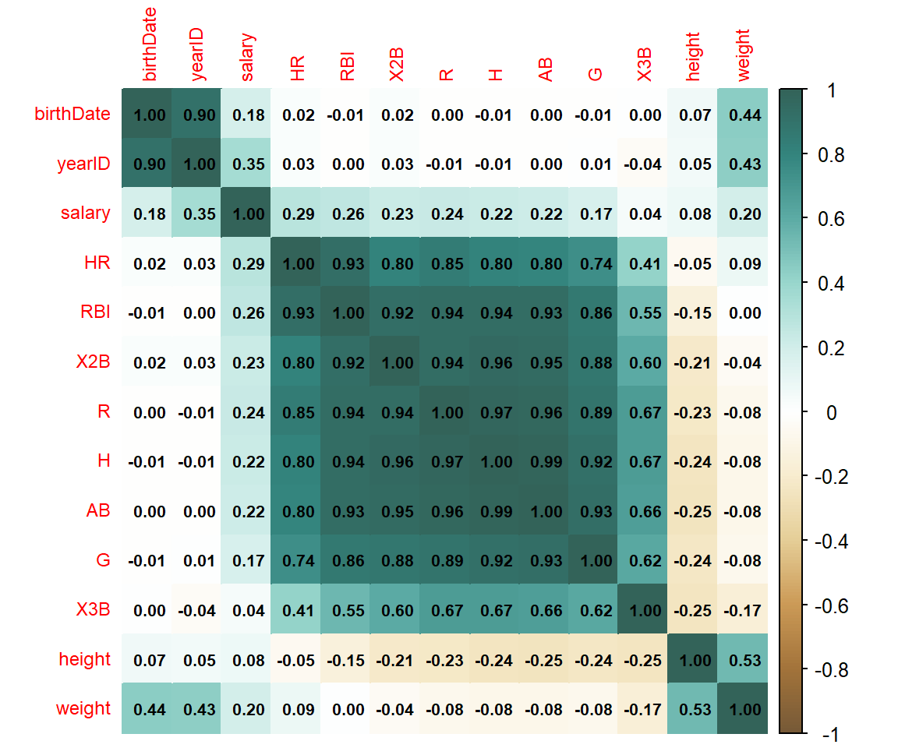

library(corrplot)
library(Lahman) #今回使用するデータセット
library(data.table) #データの成形に使用
library(lsr) #相関行列以外の例に使用corrplot
パッケージの概要
corrplotは、相関行列の可視化に特化したパッケージです。 デフォルトの設定でも相関行列を見やすい形で表示できるほか、 50を超えるパラメータにより見た目を自由にカスタマイズできます。
データセットの準備
今回は公開されているデータセットでもカラム数の多い、’Sean Lahman’s Baseball Database’というデータセットを使用します。
これはMLBの選手別・チーム別の成績等を蓄積したデータベースで、 今回は選手情報が格納されたPeople、各年度の打撃成績が格納されたBatting、 年俸が格納されたSalariesの3つのテーブルを結合して使用します。
データセットの詳細についてはパッケージ付属のDocumentationを参照してください。
まず、上記テーブルの読み込み・結合と、最低限の前処理を行います。
#大規模データの処理に向くdata.tableとしてデータを保持
dt_mlb_people <- as.data.table(People)
dt_mlb_batting <- as.data.table(Batting)
dt_mlb_salaries <- as.data.table(Salaries)
#People(選手情報)からは一部の列のみを取得
dt_mlb_people <- dt_mlb_people[,.(playerID, birthCountry, birthState, weight, height, bats, throws, birthDate)]
#Salaries(年俸)テーブルとBatting(打撃成績)をLeft join
dt_mlb <- dt_mlb_batting[dt_mlb_salaries, on = .(yearID, teamID, lgID, playerID)]
#上記テーブルとPeopleをLeft join
dt_mlb <- dt_mlb_people[dt_mlb, on = .(playerID)]
#文字列型となっている列などをfactor型に変換
dt_mlb$playerID <- as.factor(dt_mlb$playerID)
dt_mlb$birthCountry <- as.factor(dt_mlb$birthCountry)
dt_mlb$birthState <- as.factor(dt_mlb$birthState)
dt_mlb$stint <- as.factor(dt_mlb$stint)
#日付型となっている列を数値型に変換
dt_mlb$birthDate <- as.numeric(dt_mlb$birthDate)出来上がったテーブルの概要は以下のとおり。
#レコード数
nrow(dt_mlb)
## [1] 26437
#列名リスト
names(dt_mlb)
## [1] "playerID" "birthCountry" "birthState" "weight" "height"
## [6] "bats" "throws" "birthDate" "yearID" "stint"
## [11] "teamID" "lgID" "G" "AB" "R"
## [16] "H" "X2B" "X3B" "HR" "RBI"
## [21] "SB" "CS" "BB" "SO" "IBB"
## [26] "HBP" "SH" "SF" "GIDP" "salary"
#テーブル表示
dt_mlb
## playerID birthCountry birthState weight height bats throws birthDate
## <fctr> <fctr> <fctr> <int> <int> <fctr> <fctr> <num>
## 1: barkele01 USA KY 225 77 R R -5292
## 2: bedrost01 USA MA 200 75 R R -4409
## 3: benedbr01 USA AL 175 73 R R -5250
## 4: campri01 USA GA 195 73 R R -6049
## 5: ceronri01 USA NJ 192 71 R R -5706
## ---
## 26433: strasst01 USA CA 239 77 R R 6775
## 26434: taylomi02 USA FL 215 76 R R 7754
## 26435: treinbl01 USA KS 225 77 R R 6755
## 26436: werthja01 USA IL 235 77 R R 3426
## 26437: zimmery01 USA NC 215 75 R R 5384
## yearID stint teamID lgID G AB R H X2B X3B HR
## <int> <fctr> <fctr> <fctr> <int> <int> <int> <int> <int> <int> <int>
## 1: 1985 1 ATL NL 20 17 0 0 0 0 0
## 2: 1985 1 ATL NL 37 64 3 5 0 0 0
## 3: 1985 1 ATL NL 70 208 12 42 6 0 0
## 4: 1985 1 ATL NL 66 13 1 3 0 0 1
## 5: 1985 1 ATL NL 96 282 15 61 9 0 3
## ---
## 26433: 2016 1 WAS NL 24 48 3 10 1 0 0
## 26434: 2016 1 WAS NL 76 221 28 51 11 0 7
## 26435: 2016 1 WAS NL 73 0 0 0 0 0 0
## 26436: 2016 1 WAS NL 143 525 84 128 28 0 21
## 26437: 2016 1 WAS NL 115 427 60 93 18 1 15
## RBI SB CS BB SO IBB HBP SH SF GIDP salary
## <int> <int> <int> <int> <int> <int> <int> <int> <int> <int> <int>
## 1: 0 0 1 0 7 0 0 0 0 0 870000
## 2: 1 0 0 1 22 0 0 6 0 0 550000
## 3: 20 0 1 22 12 1 1 4 2 8 545000
## 4: 2 0 0 1 5 0 0 1 0 0 633333
## 5: 25 0 3 29 25 1 1 0 4 15 625000
## ---
## 26433: 2 0 0 2 11 0 0 7 0 2 10400000
## 26434: 16 14 3 14 77 0 1 0 1 2 524000
## 26435: 0 0 0 0 0 0 0 0 0 0 524900
## 26436: 69 5 1 71 139 0 4 0 6 17 21733615
## 26437: 46 4 1 29 104 1 5 0 6 12 14000000
#サマリを表示
summary(dt_mlb)
## playerID birthCountry birthState weight
## moyerja01: 25 USA :20505 CA : 4872 Min. :140.0
## vizquom01: 24 D.R. : 2140 TX : 1551 1st Qu.:185.0
## glavito02: 23 Venezuela: 1107 FL : 1490 Median :195.0
## bondsba01: 22 P.R. : 892 NY : 984 Mean :199.2
## griffke02: 22 Mexico : 333 IL : 963 3rd Qu.:215.0
## rodrial01: 22 CAN : 304 (Other):15534 Max. :315.0
## (Other) :26299 (Other) : 1156 NA's : 1043
## height bats throws birthDate yearID
## Min. :66.0 B: 2579 B: 0 Min. :-16407.0 Min. :1985
## 1st Qu.:72.0 L: 7488 L: 5660 1st Qu.: -1918.0 1st Qu.:1994
## Median :74.0 R:16370 R:20777 Median : 575.0 Median :2001
## Mean :73.5 S: 0 Mean : 693.7 Mean :2001
## 3rd Qu.:75.0 3rd Qu.: 3426.0 3rd Qu.:2009
## Max. :83.0 Max. : 9168.0 Max. :2016
##
## stint teamID lgID G AB
## 1 :25263 LAN : 958 AL:12962 Min. : 1.00 Min. : 0.0
## 2 : 163 CLE : 950 NL:13475 1st Qu.: 29.00 1st Qu.: 1.0
## 3 : 14 PHI : 949 Median : 56.00 Median : 63.0
## 4 : 1 BOS : 945 Mean : 67.84 Mean :173.1
## NA's: 996 SLN : 943 3rd Qu.:107.00 3rd Qu.:331.0
## BAL : 940 Max. :163.00 Max. :716.0
## (Other):20752 NA's :996 NA's :996
## R H X2B X3B
## Min. : 0.00 Min. : 0.00 Min. : 0.000 Min. : 0.0000
## 1st Qu.: 0.00 1st Qu.: 0.00 1st Qu.: 0.000 1st Qu.: 0.0000
## Median : 5.00 Median : 11.00 Median : 2.000 Median : 0.0000
## Mean : 23.35 Mean : 45.64 Mean : 8.816 Mean : 0.9713
## 3rd Qu.: 41.00 3rd Qu.: 85.00 3rd Qu.:16.000 3rd Qu.: 1.0000
## Max. :152.00 Max. :262.00 Max. :59.000 Max. :23.0000
## NA's :996 NA's :996 NA's :996 NA's :996
## HR RBI SB CS
## Min. : 0.000 Min. : 0.00 Min. : 0.000 Min. : 0.000
## 1st Qu.: 0.000 1st Qu.: 0.00 1st Qu.: 0.000 1st Qu.: 0.000
## Median : 0.000 Median : 5.00 Median : 0.000 Median : 0.000
## Mean : 5.133 Mean : 22.28 Mean : 3.323 Mean : 1.419
## 3rd Qu.: 7.000 3rd Qu.: 38.00 3rd Qu.: 3.000 3rd Qu.: 2.000
## Max. :73.000 Max. :165.00 Max. :110.000 Max. :29.000
## NA's :996 NA's :996 NA's :996 NA's :996
## BB SO IBB HBP
## Min. : 0.00 Min. : 0.0 Min. : 0.000 Min. : 0.000
## 1st Qu.: 0.00 1st Qu.: 0.0 1st Qu.: 0.000 1st Qu.: 0.000
## Median : 4.00 Median : 17.0 Median : 0.000 Median : 0.000
## Mean : 16.93 Mean : 32.4 Mean : 1.434 Mean : 1.554
## 3rd Qu.: 28.00 3rd Qu.: 55.0 3rd Qu.: 1.000 3rd Qu.: 2.000
## Max. :232.00 Max. :223.0 Max. :120.000 Max. :35.000
## NA's :996 NA's :996 NA's :996 NA's :996
## SH SF GIDP salary
## Min. : 0.000 Min. : 0.000 Min. : 0.000 Min. : 0
## 1st Qu.: 0.000 1st Qu.: 0.000 1st Qu.: 0.000 1st Qu.: 293750
## Median : 0.000 Median : 0.000 Median : 1.000 Median : 550000
## Mean : 1.637 Mean : 1.463 Mean : 3.915 Mean : 2085160
## 3rd Qu.: 2.000 3rd Qu.: 2.000 3rd Qu.: 7.000 3rd Qu.: 2350000
## Max. :39.000 Max. :17.000 Max. :35.000 Max. :33000000
## NA's :996 NA's :996 NA's :996使用例
相関行列を計算するには数値型である必要があるため、factor型となっている特徴量は除いておきます。
cols_factor <- names(dt_mlb)[sapply(dt_mlb, is.factor)]
cols_nonfactor <- setdiff(names(dt_mlb), cols_factor)
dt <- dt_mlb[,.SD,.SDcol = c(cols_nonfactor)]cor関数で相関行列を計算し、corrplot関数を用いて相関行列を可視化します。
salaryとの相関を確認してみると、打撃成績の中ではHR(ホームラン)との相関が相対的に強いように見えます。
mat_cor <- cor(dt,
method = 'pearson', #ピアソンの積率相関係数。順位相関係数(ケンドール、スピアマン)も使用できる。
use = 'pairwise.complete.obs')
#NAとなっているデータの取り扱い。
#デフォルトはNAが混ざっている列の相関係数をNAとするものであったので、
#NAとなっているデータを無視して計算するように設定。
corrplot(mat_cor)以下、いくつか見た目のカスタマイズ例を紹介します。
corrplot(mat_cor[c(1:12,22), c(1:12,22)],
method = 'color', #単純な色分けのみにする
tl.cex = 0.75, #特徴量名のフォント大きさ調節(小さめ)
addCoef.col = 'black', #相関係数を指定した色で表示
number.cex = 0.65, #相関係数のフォント大きさ調節(小さめ)
order = 'AOE', #相関の高いもの同士が近くになるように表示順序を変更
col = adjustcolor(COL2('BrBG', 200),#色合いを変更 200は色の段階数
offset = c(1/5, 1/5, 1/5, 0), #相関係数が見えやすいよう少し薄く色を調節
transform = diag(c(4/5, 4/5, 4/5, 1)))
)
mat_p <- cor.mtest(dt, conf.level = 0.95)$p #p値の計算
corrplot(mat_cor[c(1:12,22), c(1:12,22)],
method = 'square', #正方形で表示
diag = FALSE, #対角線は表示しない
tl.pos = 'd', #特徴量名を対角線に表示
tl.cex = 0.6, #特徴量名のフォント大きさ調節(小さめ)
order = 'hclust', #相関の高いもの同士が近くになるように表示順序を変更
addrect = 3, #hclustを選択した時のみ指定可能、近いもの同士を3つに分類して正方形の枠で囲む
rect.col = 'gray40', #前述の枠の色
p.mat = mat_p[c(1:12,22), c(1:12,22)], #p値行列を与える
sig.level = 0.10, #p値が0.1以上であれば×を表示
)mat_p = cor.mtest(dt, conf.level = 0.95)$p #p値の計算
corrplot(mat_cor[c(1:12,22), c(1:12,22)],
type = 'lower', #下半分のみ表示
method = 'shade', #単純な色分けだが、指定した条件を満たすの場合は斜め線を入れる
addshade = 'negative', #斜め線を入れる条件
tl.cex = 0.6, #特徴量名のフォント大きさ調節(小さめ)
order = 'alphabet', #名前順
p.mat = mat_p[c(1:12,22), c(1:12,22)], #p値行列を与える
insig ='label_sig', #p値に応じて*を入れる
sig.level = c(0.001, 0.01, 0.05), #*の数のしきい値
pch.cex = 0.9, #*の大きさ
)corrplot.mixed(mat_cor[c(1:12,22), c(1:12,22)], #corrplot.mixedとすると二つの表示形式をミックスできる
lower = 'number', #下半分は相関係数を表示する
upper = 'ellipse', #上半分は楕円で表示する
tl.cex = 0.6, #特徴量名のフォント大きさ調節(小さめ)
number.cex = 0.55, #相関係数のフォント大きさ調節(小さめ)
order = 'AOE', #相関の高いもの同士が近くになるように表示順序を変更
)
相関行列ではないものを表示することも可能です。
例えば、質的変数と量的変数の組に対して分散分析のイプシロンを表示してみます。
mat_nf <- matrix(nrow = length(cols_nonfactor), ncol = length(cols_factor))
rownames(mat_nf) <- cols_nonfactor
colnames(mat_nf) <- cols_factor
dt <- dt_mlb
for(c_r in cols_nonfactor){
for(c_c in cols_factor){
dt_tmp <- dt[!is.na(dt[[c_r]]) & !is.na(dt[[c_c]]),.SD, .SDcols = c(c_r, c_c)]
mu <- mean(dt_tmp[[c_r]])
ss_t <- sum((dt_tmp[[c_r]]-mu)^2)
ss_m <- sum(dt_tmp[, .(ss = .N * (mean(.SD[[1]]) - ..mu)^2), by = c_c, .SDcols = c_r]$ss)
ss_e <- ss_t - ss_m
dig_free <- length(unique(dt_tmp[[c_c]]))-1
ms_e <- ss_e/(nrow(dt_tmp)-dig_free-1)
mat_nf[c_r, c_c] <- sqrt(max((ss_m - dig_free*ms_e)/ss_t, 0))
}
}
corrplot(mat_nf[,setdiff(cols_factor, c('playerID'))],
is.corr = FALSE, #相関行列ではない場合 (数値の範囲が[-1, 1]固定ではなくなる)
col.lim = c(0, 1), #数値の範囲指定
method = 'color', tl.cex = 0.8,
col = COL1('YlGn'),
cl.ratio = 0.4 #凡例の幅調節 そのままだと細すぎたので太目に変更
)Warning in corrplot(mat_nf[, setdiff(cols_factor, c("playerID"))], is.corr =
FALSE, : col.lim interval too wide, please set a suitable valueまた別の例として、質的変数同士の組に対してはクラメールの連関係数を表示してみます。
mat_ff <- matrix(nrow = length(cols_factor), ncol = length(cols_factor))
rownames(mat_ff) <- cols_factor
colnames(mat_ff) <- cols_factor
dt <- dt_mlb
for(c_r in cols_factor){
for(c_c in cols_factor){
#非常に小さいカテゴリがある場合は検定の仮定となる近似が満たされなくなるため、警告が表示される
suppressWarnings(mat_ff[c_r, c_c] <- lsr::cramersV(dt[[c_r]], dt[[c_c]]))
}
}
corrplot(mat_ff[setdiff(cols_factor, c('playerID')), setdiff(cols_factor, c('playerID'))],
is.corr = FALSE, #相関行列ではない場合 (数値の範囲が[-1, 1]固定ではなくなる)
col.lim = c(0, 1), #数値の範囲指定
method = 'color',
addgrid.col = 'white', #罫線を白色で表示する
tl.cex = 0.8, addCoef.col = 'black', number.cex = 0.65,
col = COL1('Blues'),
)